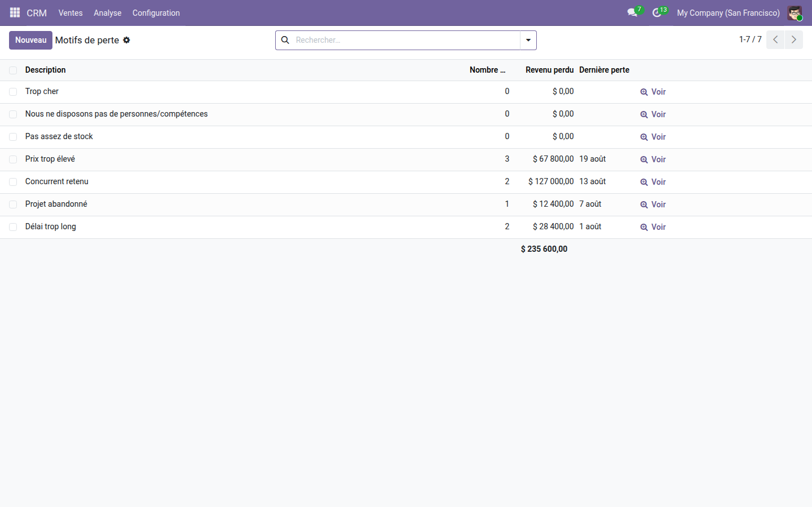
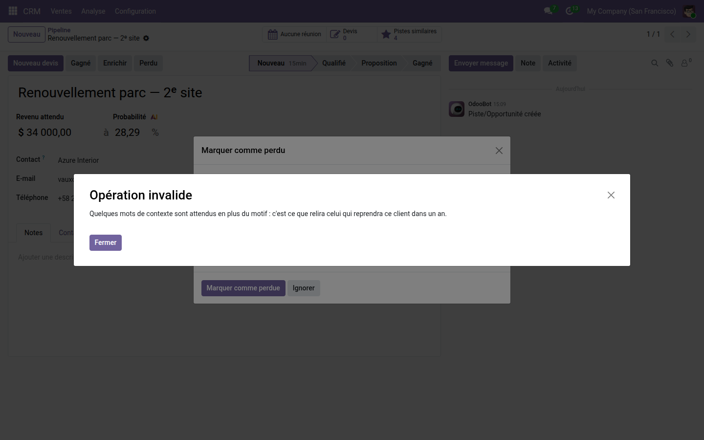

Aucune opportunité perdue sans motif, et ce que chaque motif coûte vraiment.
Dans Odoo, le motif de perte est facultatif : l'assistant l'affiche, personne n'est obligé de le remplir. Six mois plus tard, la moitié du pipeline perdu est sans explication, et la question « pourquoi perdons-nous ? » n'a pas de réponse chiffrée. Le cœur compte bien les opportunités par motif — mais il ne dit pas ce que chacun emporte.
« Prix trop élevé » sur trois affaires et « Concurrent retenu » sur deux : c'est le second qui emporte le plus d'argent. Le total en bas de colonne donne le montant du pipeline perdu, et le bouton de chaque ligne ouvre les affaires concernées.

Le motif est choisi, la note reste vide : la clôture est refusée, et le refus dit pourquoi plutôt que d'afficher un champ rouge sans explication.

Savoir pourquoi on perd est un début ; éviter de perdre en est la suite. La gamme OdooSkills propose la détection des opportunités qui dorment, le cloisonnement des portefeuilles entre équipes commerciales, l'approbation des devis et les commissions des vendeurs. Catalogue complet : apps.odooskills.com.
Licence LGPL-3 — compatible Odoo 19.0 Community et Enterprise. Support : support@odooskills.com.